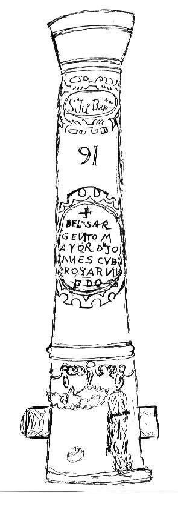
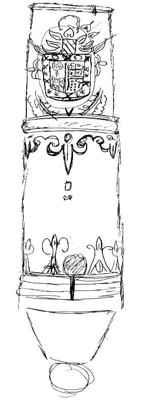
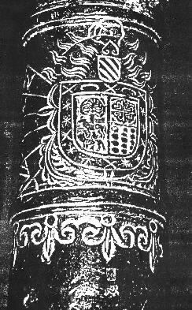

|  |
|  |
This cannon is on permanent display in the museum at the Mission Espiritu Santo in Goliad State Historical Park, at Goliad (Victoria County), Texas. The display bears a tag which simply states, "Brass cannon found at Presidio La Bahia"<-- (see regional map, attached)>. Local history and lore of the Goliad area of Texas can date the cannon back to at least the 1830s; but it does not account for the earlier history of the cannon.
The cannon appears to be in one piece. However, I am told that when it was found, it was fractured and in two pieces. The location of the break is just forward of the carriage bar and dolphins. One of the dolphins is missing and the touch port is cratered.
The cannon is of cast brass, about 38" long (by estimate, about 1 meter), with a bore of about 2" to 3" diameter (also by estimate, about 5.0 - 8.0 centimeters). From the texture of the coat of arms and other areas of high artistic detail, it appears as though the pre-cast form was molded in clay, then allowed to become "almost dry", perhaps to the consistency of leather, and then the designs and details etched, incised, molded and sculpted into and onto the clay form, a pouring-mold then made, and the brass cannon cast.
I was able to inspect and sketch the cannon only as it was
displayed. To my eye, the cannon appears to be of Spanish origin
- based upon the language alone; the design motifs in the coat
of arms are quite obviously Spanish. From my own limited knowledge
however, I am unable to rule out the possibility of the cannon
being cast in Mexico or elsewhere in Spain's overseas colonies.
From the sketch we can see writings and designs on the cannon,
from the muzzle to the touch-port, as follows:
1. Sn Ju Bapta
2. 91 (or 16??)
3. + DEL SARGENTO MAYOR DN JOANES CU DE
R O Y A R N F D O
(F = R ???)
4. Coat of arms.

Based on other Spanish cannons of the period, the "San Juan Bautista" near the muzzle is probably the cannon's "baptismal name". Otherwise, it might represent a classification, or a type, or perhaps the name of a town or ship for which the cannon had been destined. Perhaps it was a perpetual invocation to the saint, to help guide the ball straight and true.
What is the significance of the "91" on the cannon? Was it a model number? A type designation? A serial number? Or was the "91" actually a "16" when viewed from the front?
Who was "Sargento Mayor Joanes CU DE ROYARN FDO"? Was he perhaps the officer in charge? Was the cannon maybe a memorial dedicated to a valiant soldier (note the " + " that precedes his name)? Or, was the Sargento Mayor perhaps the foundry's Vulcan? The letters following the word "Joanes" -- CU DE ROYARN FDO -- are especially puzzling.

The large ornate coat of arms on the cannon is interesting, and I will attempt to describe it (with my apologies in advance to any heraldists who may happen to read this).

The main shield is bordered by a wide band containing " X "s, " * "s and another simple design element which resembles a "fall-down C". The main shield itself is halved, vertically, such that the right side of the shield (left side facing) contains a tree and the profiles of two bull-like animals which are positioned one above the other, both animals facing toward the left (toward the outer edge of the shield). The left half of the shield (right half facing) is halved again, horizontally, with the upper part containing an ornate and stylized cross design (such as that used by Spain's Order of Calatrava), and the lower part containing a grouping of 13 balls, in 3 vertical rows, stacked 4 - 5 - 4.
Above the banded shield is placed another smaller shield, consisting of four or five diagonal stripes which run "northwest to southeast" (when looking at the cannon); above this smaller shield is positioned a stylized "inverted heart" design; and above the "inverted heart" motif is seen the profile of a left-facing helm with a cage-visor; radiating from these last three upper elements, along both sides, are tongues of flame.

Having reviewed the magnified photographs that I took, I discover that there are two small, but significant markings (no doubt "foundry stamps") which I originally overlooked. They show up very clearly on the photographs. These two stamps, stacked one atop the other, are located between the coat of arms and the touch-port. The first appears to be a very small embattled crest (or perhaps a crest with a crown above it), and the second mark appears to be a fanciful animal facing to the right, with a long tail re-curved back over the body, and with its left front foot raised. I saw no other markings.
I have puzzled over this cannon for a number of years, and
I hope that someone will be able to assist me in finding the answers
to some of the questions I have posed, particularly as to the
place and time of manufacture. And, I am sure that the Texas State
Historical Commission would likewise be interested.
Paul Newfield III pcn01@webdsi.com
3016 45th Street
Metairie, Louisiana
USA 70001
-->